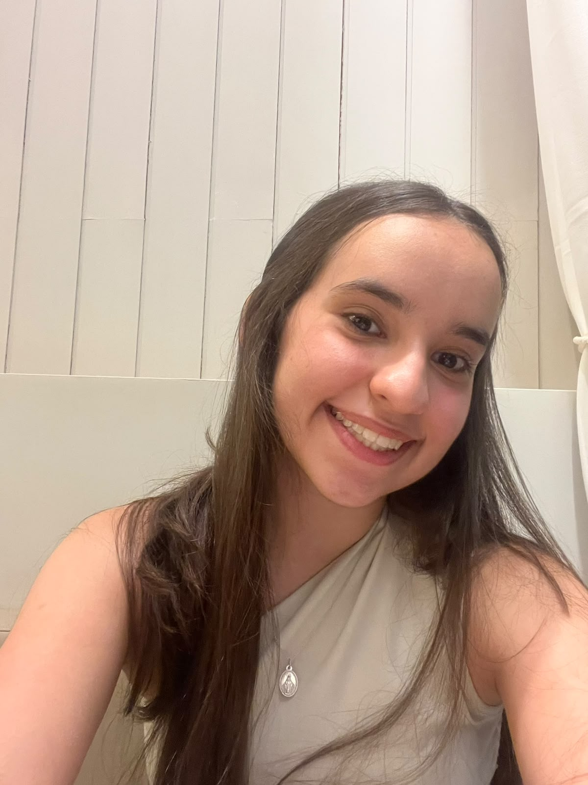

Quem sou eu?
Sou uma estudante do primeiro ano do ensino médio, apaixonada por programação e matemática. Gosto de criar soluções inovadoras e aprender coisas novas todos os dias.
Atualmente moro em Fortaleza, Ceará, mas nasci e cresci em Natal, Rio Grande do Norte. Tenho 16 anos e quero cursar ciências da computação na faculdade.
Meus Hobbies e Interesses
- Tocar piano
- Sair com meus amigos
- Viajar e conhecer novos lugares
Meus Objetivos
- Estudar ciências da computação em uma universidade no exterior
- Desenvolver habilidades em programação e resolução de problemas para ganhar medalhas na OBI
- Me aprofundar em informática e matemática para construir um currículo dinâmico